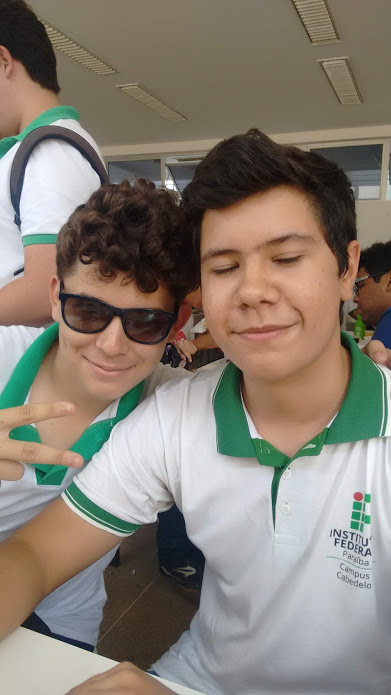

A Taverna foi criada por Lucas Pessoa e Pedro Bravim com o intuito de criticar e dar informações úteis a respeito de cervejas. Este site consiste em um Mini Projeto sem fins lucrativos da disciplina de Linguagem de Marcação do curso de tecnologia em Sistemas para Internet do IFPB - Campus João Pessoa.
